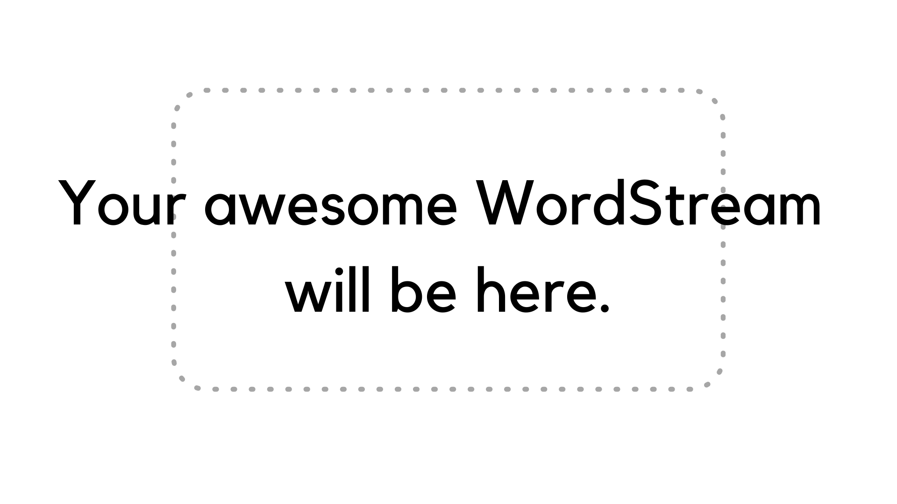

Supported format: CSV, TSV.
WordStream


This is the original work that introduced WordStream in EuroVis 2019 :)

WordStream was used to visualize social awareness to groundwater availability.

https://www.esquire.com.
Esquire
blog posts during the time
span: January 2013 - December 2013

WikiNews is a free-content news source wiki and a project of the Wikimedia Foundation. The site works through collaborative journalism. Time span: January 2014 - March 2015.

Source: https://www.acleddata.com/.
The Armed Conflict Location & Event Data Project (ACLED) is a disaggregated conflict collection, analysis and crisis mapping project. ACLED collects the dates, actors, types of violence, locations, and fatalities of all reported political violence and protest events.
Location: Africa.

The project was funded by NASA, administered by Gordon Research Conference (GRC).

Interactive visualization for emerging topics in the crossing of IoT, Big Data, and Cybersecurity over time.

This database is generated by REACH group at the University of Arizona, containing cards extracted from PMC papers, divided into two types of protein interactions: increase activity and decrease activity. Time span: 2006 - 2013.

Crooks and Liars is an award-winning site for progressive news and media criticism. Started and owned by John Amato in 2004, Crooksandliars.com was the first website to feature audio and video online, revolutionizing how political news is consumed and distributed on the Internet. Time span: January 2010 - December 2010.

Source: https://www.acleddata.com/.
The Armed Conflict Location & Event Data Project (ACLED) is a disaggregated conflict collection, analysis and crisis mapping project. ACLED collects the dates, actors, types of violence, locations, and fatalities of all reported political violence and protest events.
Location: Asia.

A comprehensive dashboard that employs data from social media posts. Submission for the 2019 VAST Mini-Challenge 3.

These are top authors' name in four venue for Visualization Publications: Vis, VAST, InfoVis and SciVis. Time span: 1995 - 2016.

Quantum computing publications on IEEE. Time span: 1998 - 2018.

FactCheck.org is a project of the Annenberg Public Policy Center of the University of Pennsylvania, a nonpartisan, nonprofit “consumer advocate” for voters that aims to reduce the level of deception and confusion in U.S. politics.

Source: https://www.acleddata.com/.
The Armed Conflict Location & Event Data Project (ACLED) is a disaggregated conflict collection, analysis and crisis mapping project. ACLED collects the dates, actors, types of violence, locations, and fatalities of all reported political violence and protest events.
Location: Middle East.